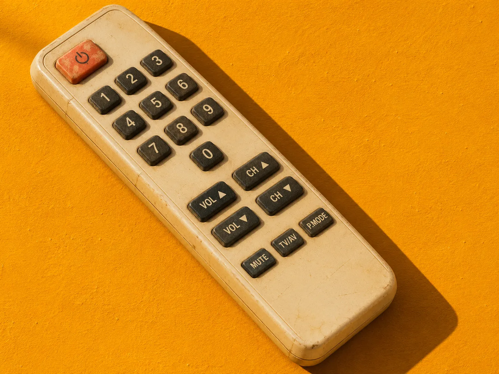
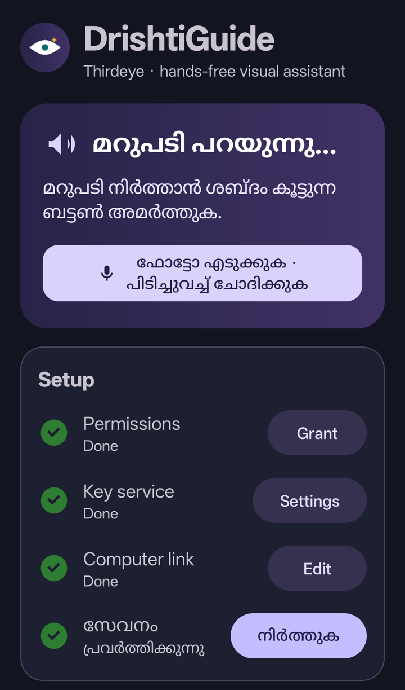

DrishtiGuide for Android
See with
sound.
Point your phone at the world around you. Press Volume Up and hear what’s in front of you, in Malayalam.
For blind and low-vision people. Built in Kerala.

താഴത്തെ വരിയിൽ ഇടതുവശത്താണ് മ്യൂട്ട് ബട്ടൺ.
Mute is on the left of the bottom row.
How it works
One familiar
volume key.
Keep your thumb on the side of the phone. The same button lets you look, ask, or interrupt.
Tap to look
Press Volume Up once. DrishtiGuide takes a photo and describes the scene aloud.
Hold to ask
Hold Volume Up while you ask a question in Malayalam, English, or Hindi. Release it to send your question with the photo.
Press to interrupt
Press Volume Up during a reply to stop playback. Use that same press to start your next request.

Get started
Set up your
third eye.
You’ll need an Android phone, a computer, and a Sarvam API key.
Start the server
Configure the API key and phone token on your computer, then run
Server setup guide./run.sh.Install the Android app
Build the APK, install it on your phone, and enable the Volume Up accessibility service.
Android build and installPair and listen
Open
/pairon the computer and scan its QR code with the phone. Start the service and try a quick press.